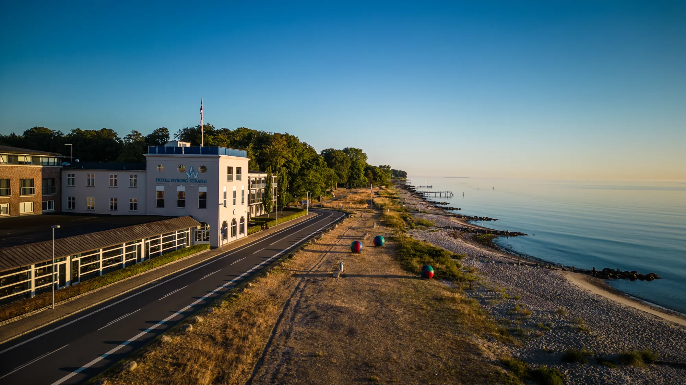
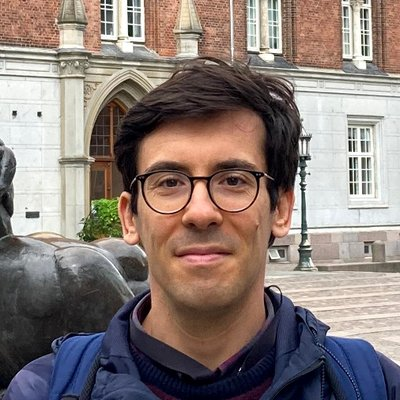
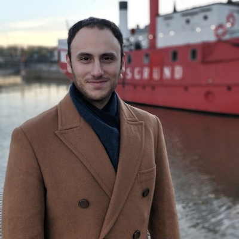
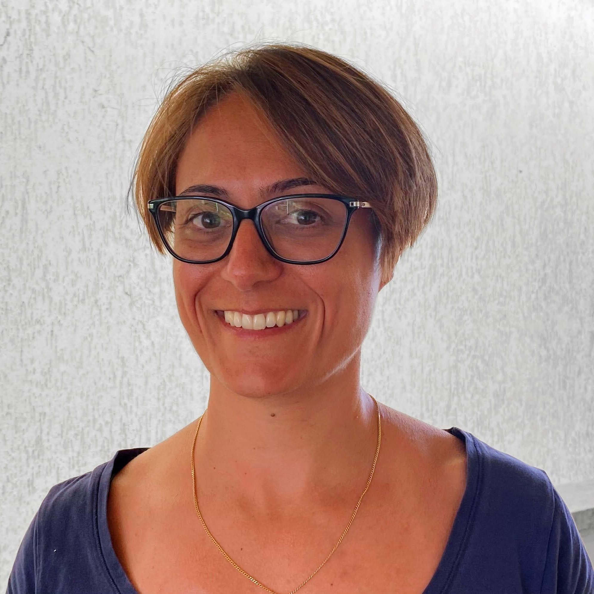
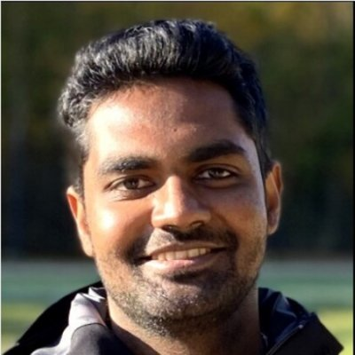

Welcome to EWRLC 2027
RLC × EWRLTogether for the first time
This is the main website for EWRL and RLC Europe 2027, which are co-located at Nyborg Strand in Nyborg, Denmark. Information and paper submissions for EWRL are available through this website. RLC is also taking place in Providence, Rhode Island. For submissions to RLC Europe and North America, please visit the RLC website.
Planning is underway
EWRLC makes its debut in 2027, bringing together the 20th edition of EWRL and the 4th edition of RLC.
EWRLC brings together researchers working on the theory and practice of reinforcement learning to exchange ideas, discuss open problems and share new research.
The event will take place on 22–25 August 2027. We look forward to welcoming the community to Nyborg Strand in Nyborg, Denmark.
Start planning
The essentials
- Event dates
- 22–25 August 2027
- Location & venue
- Nyborg Strand · Nyborg, Denmark
- Submissions open
- 17 February 2027, 11:59 pm AoE
- Submission deadline
- 17 March 2027, 11:59 pm AoE
- Paper notification
- 6 May 2027 AoE
- Paper submissions
- Submit via OpenReview ↗ · Call for papers
- Registration
- Not yet open; details to be announced
Programme & speakers
The programme, keynote speakers and accepted papers will be published when available.
Programme updates →Organizers

Melih Kandemir
SDU
General chair

Mert Celikok
SDU
Program chair

Silvia Tolu
DTU
Sponsorship chair

Sai Ganesh Nagarajan
SDU
Publicity chair
Sponsors
To be confirmed